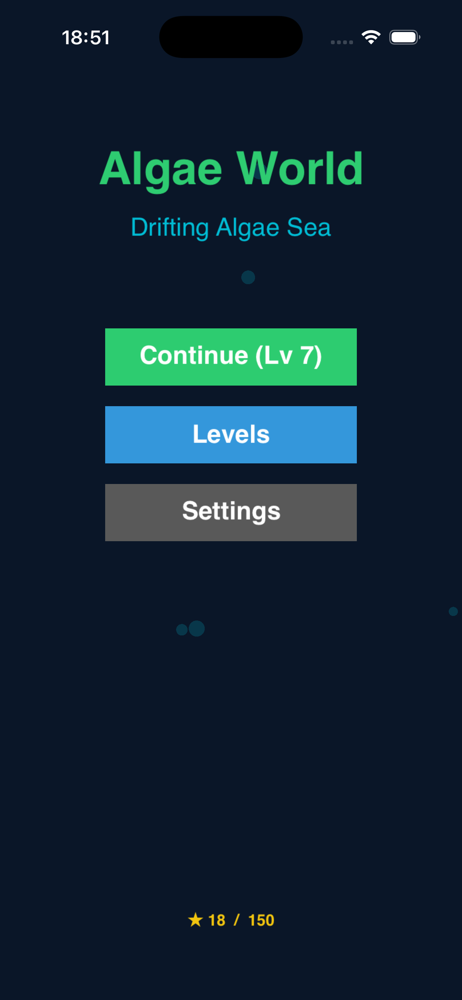
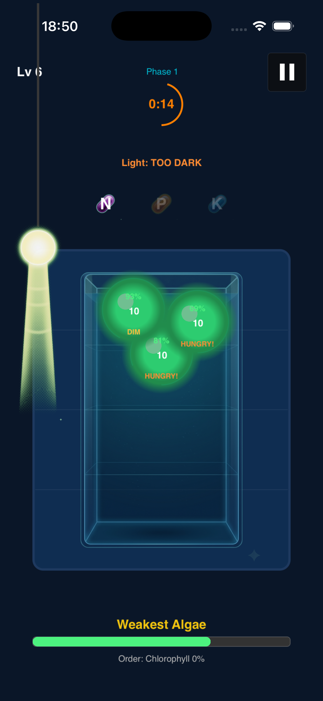
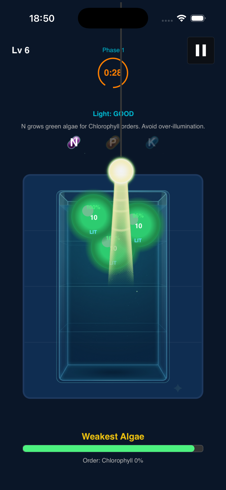
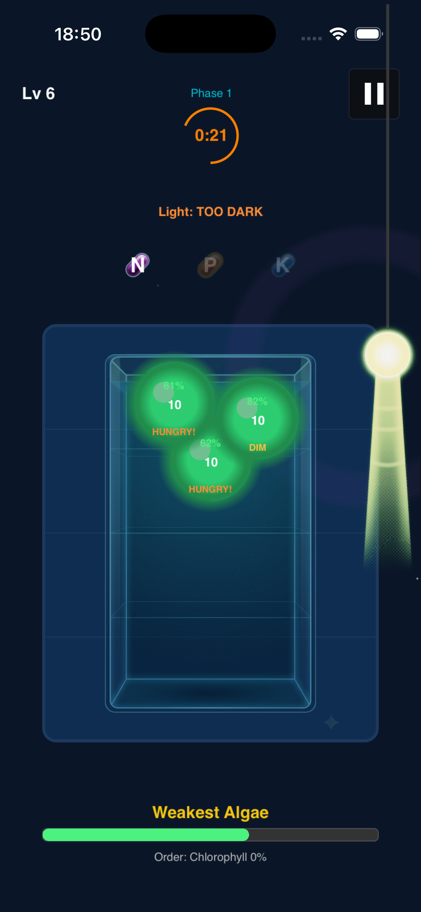
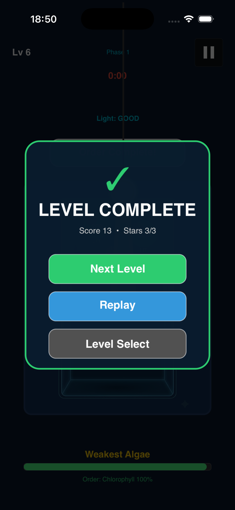

Algae World
Move the lamp, feed algae with nutrient capsules, and keep each colony in the right light zone.
Algae World is a single-player cultivation puzzle where light position, algae species, and N/P/K capsules work together. Each level asks you to protect colony health, grow the right algae, and complete compound orders before time runs out.

Main Menu
Algae World title with Play, Levels, and Settings buttons over a deep-sea algae backdrop.

Light Control
Drag the lamp around the tank. Direct, refracted, filtered, and dark zones change algae efficiency and health.

Nutrient Capsules
Tap N, P, and K capsules to dissolve nutrients into the water. Each algae type prefers a different nutrient.

Compound Orders
Grow the right algae to synthesize chlorophyll, phycocyanin, phycoerythrin, carotenoid, omega-3, and more.

Level Complete
A result panel shows star rating based on algae survival rate and total population.
About Algae World
Algae World is a cultivation puzzle built on SpriteKit. You control a light source that illuminates a tank of algae colonies. Each algae species responds to light differently: green algae thrives in direct light with nitrogen, cyanobacteria prefers refracted light with phosphorus, red algae uses potassium under filtered light, and golden algae balances all three nutrients.
The game spans 50 levels across five phases. Phase 1 (L1–L10) introduces green algae and chlorophyll orders. Phase 2 (L11–L20) adds cyanobacteria and phycocyanin. Phase 3 (L21–L30) brings red and golden algae with phycoerythrin, carotenoid, omega-3, and antioxidant orders. Phase 4 (L31–L40) introduces day/night cycles with oxygen pressure and biodiesel synthesis. Phase 5 (L41–L50) is the space cultivator challenge culminating in SpaceNutrient synthesis.
Each level lasts 30 seconds. Nutrients decay exponentially based on half-life, so you must time capsule taps carefully. Over-illumination and nutrient overload can harm colonies. Star ratings reward survival rate and total population: three stars for 80% survival and full target population, two stars for 50% survival and half target, one star for any survivors.
How to Play
1. Move the Lamp
Drag the light source around the tank. Watch the HUD: the LIGHT chip shows whether each algae is in GOOD, FED, or OVER-lit state. Keep algae in the optimal zone to maintain health.
2. Feed Nutrients
Tap N, P, or K capsules at the bottom to inject nutrients. Green algae uses N, cyanobacteria uses P, red algae uses K, and golden algae likes balanced N/P/K. Nutrients decay over time.
3. Watch Oxygen
Algae produce oxygen during photosynthesis. In day/night levels (Phase 4+), oxygen drops at night. Keep the oxygen bar above zero to avoid colony damage.
4. Complete Orders
Each level has a target compound. Grow the right algae type to synthesize the compound and fill the order meter before time runs out.
5. Earn Stars
Three stars: 80% survival and full target population. Two stars: 50% survival and half target. One star: any survivors. Zero stars if all algae die.
6. Explore 50 Levels
Progress through five phases: green algae basics, cyanobacteria partnership, red and golden algae, day/night oxygen cycles, and the final space cultivator challenge.
Support
How do I play?
Drag the lamp to illuminate algae, tap N/P/K capsules to feed nutrients, and complete the compound order before time runs out while keeping colony health above zero.
Does it need internet?
No. Algae World is an offline single-player game with all progress saved locally on your device.
Need help?
After release, contact support through the Algae World App Store product page.